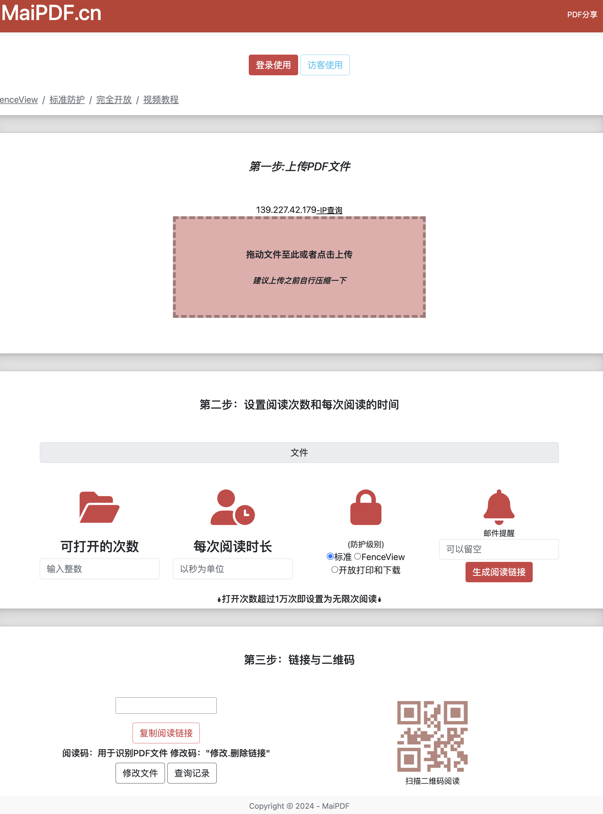
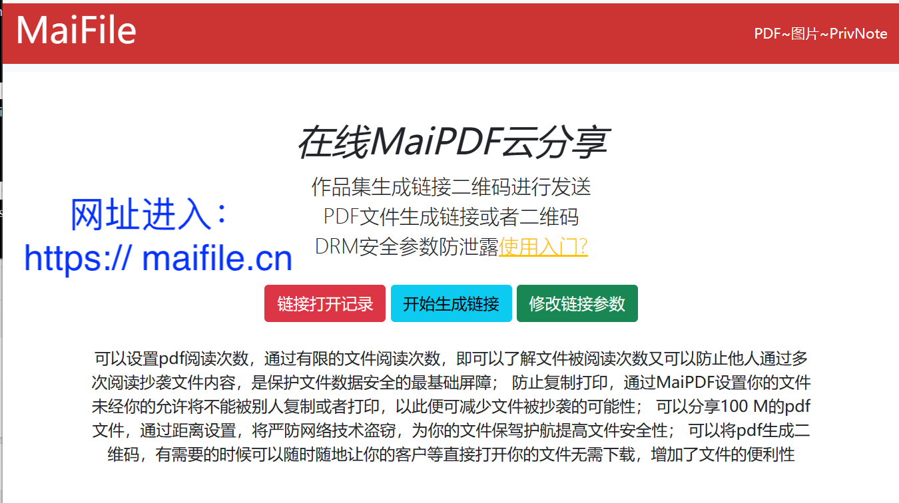
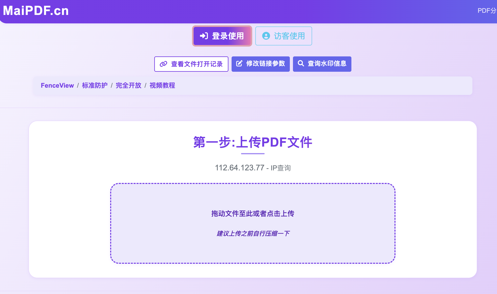
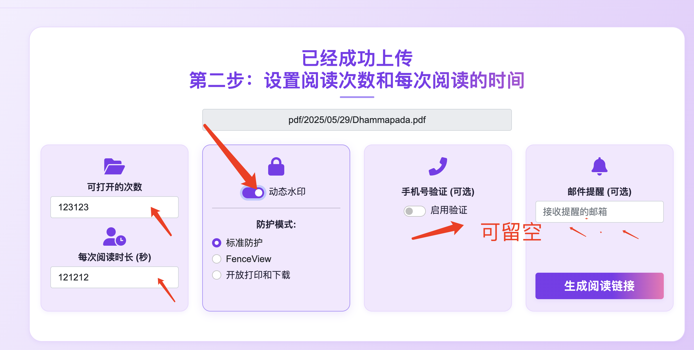

本教程将手把手教您如何使用专业技术秘密监控PDF文档的阅读者，获取他们的IP地址、地理位置、阅读行为等详细信息。无论您是商务人士、安全专家还是研究人员，都能从中学到实用的监控技巧。

首先需要选择一个功能强大、隐蔽性好的PDF监控平台。

将需要监控的PDF文档上传到平台，并进行详细的监控配置。

配置高级监控参数，确保能够获得最详细的访问者信息。

系统会为您的PDF生成看似普通但实际具有强大监控功能的链接。